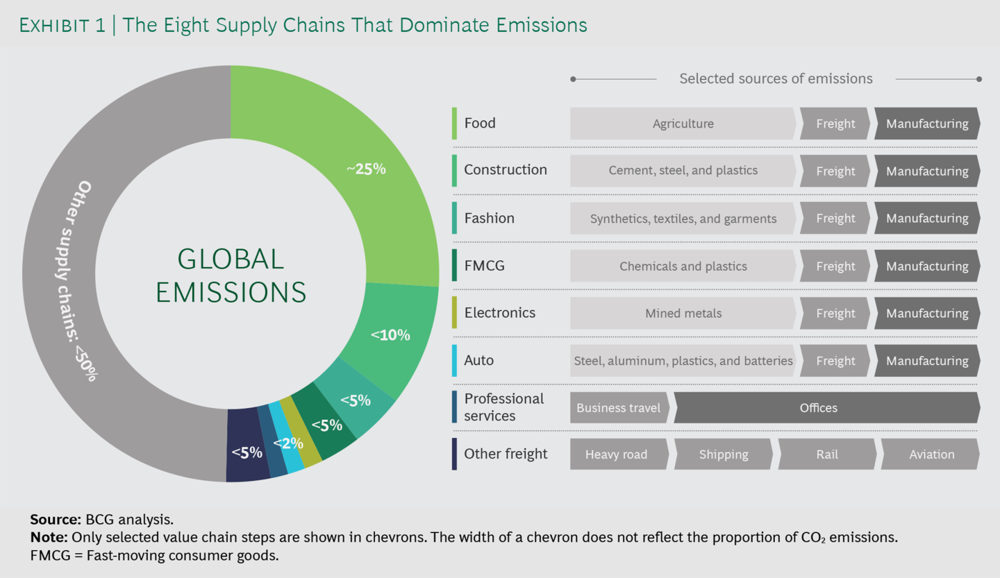

38 Net Zero
The predecessor to ‘Net Zero’ was and still is called ‘offsetting.’
38.1 Net Zero Trap
Burn Now - Pay Later
The threats of climate change are the direct result of there being too much carbon dioxide in the atmosphere. So it follows that we must stop emitting more and even remove some of it. This idea is central to the world’s current plan to avoid catastrophe. In fact, there are many suggestions as to how to actually do this, from mass tree planting, to high tech direct air capture devices that suck out carbon dioxide from the air.
The current consensus is that if we deploy these and other so-called “carbon dioxide removal” techniques at the same time as reducing our burning of fossil fuels, we can more rapidly halt global warming. Hopefully around the middle of this century we will achieve “net zero.” This is the point at which any residual emissions of greenhouse gases are balanced by technologies removing them from the atmosphere.
This is a great idea, in principle. Unfortunately, in practice it helps perpetuate a belief in technological salvation and diminishes the sense of urgency surrounding the need to curb emissions now.
We have arrived at the painful realisation that the idea of net zero has licensed a recklessly cavalier “burn now, pay later” approach which has seen carbon emissions continue to soar. It has also hastened the destruction of the natural world by increasing deforestation today, and greatly increases the risk of further devastation in the future.
38.2 Net Negative
Overshoot
Given the dawning realisation of how difficult Paris would be in the light of ever rising emissions and limited potential of BECCS, a new buzzword emerged in policy circles: the “overshoot scenario.” Temperatures would be allowed to go beyond 1.5°C in the near term, but then be brought down with a range of carbon dioxide removal by the end of the century. This means that net zero actually means carbon negative. Within a few decades, we will need to transform our civilisation from one that currently pumps out 40 billion tons of carbon dioxide into the atmosphere each year, to one that produces a net removal of tens of billions.
38.3 Direct Air Capture
Direct air capture, now being touted by some as the most promising technology out there, has taken hold. It is generally more benign to ecosystems because it requires significantly less land to operate than BECCS, including the land needed to power them using wind or solar panels.
Unfortunately, it is widely believed that direct air capture, because of its exorbitant costs and energy demand, if it ever becomes feasible to be deployed at scale, will not be able to compete with BECCS with its voracious appetite for prime agricultural land.
38.4 Net Zero Targeting
Navigating the nuances of net-zero targets analyses the momentum of targets for net-zero emissions across companies, cities and regions worldwide. We seek to unravel the net-zero targets to better enable the identification of truly ambitious actors and enhance support towards them. We offer recommendations for increasing target transparency with the aim of achieving greater accountability and ambition.
38.5 Action Tracker
38.5.1 Net Negative
India
India does not have a target for when it will cut emissions and has been under diplomatic pressure ahead of the COP26 summit in Glasgow in November.
Instead it aims to reduce emissions intensity — or the amount of pollution relative to GDP — by 33 per cent by 2030, relative to 2005 levels. Emissions intensity targets do not guarantee reductions in absolute emissions.
India is expected to be among the world’s biggest contributors to emissions growth in coming years because of its increasing energy needs, although its total emissions today are less than half of the US level.
Energy Minister Singh said: “I believe that it’s important for all the developed countries to talk about, not net zero, but about removing more carbon from the atmosphere than they are adding — net negative is what they need to talk about.”
38.6 Scope3 Value Chain Emissions
Addressing scope 3 emissions is fundamental for companies to realize credible climate change commitments and is mandatory for all members of Race to Zero. It lets customer-facing sectors use their influence to speed and support rapid decarbonization throughout the economy.
In most supply chains, the costs of getting to net zero (the state in which as much carbon is absorbed as is released into the atmosphere) are surprisingly low.

Eight global supply chains account for more than 50% of annual greenhouse gas emissions. Only a small proportion of these emissions are produced during final manufacturing. Most are embedded in the supply chain—in base materials, agriculture, and the freight transport needed to move goods around the world.
For producers of many of these materials, as well as for freight transport players, ambitious decarbonization is extremely challenging. Many emission reduction measures are comparatively expensive. Supply chain partners often operate in markets that are commoditized, with slim margins and limited opportunities for differentiation. Across a whole value chain, however, emissions may be addressed more affordably. In most supply chains, there is the potential for substantially more efficiency and for much greater reuse of materials. In addition, a large share of emissions comes from traditional power, which can be replaced relatively cheaply with renewables.
As a result of this—and the fact that emission-intensive base materials account for only a small share of end consumer prices—decarbonization is much less expensive for companies at the end of any given value chain. In fact, in all the value chains we have analyzed, full decarbonization would lead to an increase of no more than 4% in end consumer prices.
So why is supply chain decarbonization not already commonplace? The answer is that it is challenging.
For one thing, most companies do not understand the extent or the nature of the problem. While a manufacturer can calculate the greenhouse gas emissions from its own operations with a relatively high degree of confidence, getting a view on scope 3 emissions is complex. The challenges are especially daunting for companies with tens of thousands of individual products and significant turnover in the supplier base. Some even struggle to understand who their suppliers are in the first place. It does not help that data-sharing on product emission footprints is still in its infancy.